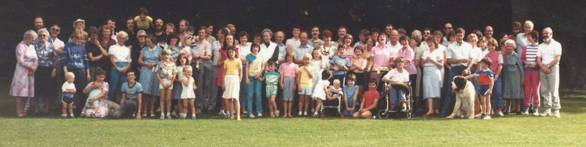

One of my first memories of a Hogan event - I have very vague memories of a trip to Glenart but they are not strong - was a family picnic in Glendalough. I'm not sure exactly when it took place but as my Dad was there, it was pre-1968 so I was 6 at most. My memories suggest that everyone who was anyone was there. I'm pretty sure there were McKennas and Browners, as well as a coterie of Hogans, O'Hogans, Coyles, O'Briens and O'Kennedys. But the event itself was a precursor to what has become a an important ritual in Hogan family bonding - The Picnic.
It wasn't a big day, an occasion, nor did it warrant a group photo. I don't know if Eugene was even there! But it was a key point in my learning journey. Being a Hogan was about more than just Herberton Drive.
On the 1st September 1984, the Hogan clan gathered in Marley Park, Rathfarham for the first official Hogan Family Picnic . Urban folklore suggests that it was organised by Denis and Dara but I'm sure many more had input. The elder lemons of the Hogan cousins had been meeting regularly at funerals in the preceding years and the feeling was that it would be much better to meet in celebratory mood. The picnic was the result.

Group photo from Hogan Family Picnic at Marlay Park, Rathfarnham, Dublin, 1st September 1984 Taken by Eugene Hogan
What a day. Hogans and O'Hogans threw frisbees to O'Briens and O'Kennedys, while Coyles popped up and caught them. Sheila and Eileen came over from England whilst McKennas, Kearns and Browners masqueraded as long-lost relatives (They're not really related to us, are they?). Auntie Noreen was still on remand at the time and wasn't allowed out for the occasion. If I remember correctly, the school room in Firhouse was on standby in case of inclement weather. But Carmelite prayers are very powerful and the fine weather held up.
When I look at the photo above what strikes me most is the seemless transition between Dara/Enda and Elaine Hogan/Sarah Lynott. My generation looks distinctly different from the one above us. It is easy to differentiate between Maeve/Dara/Denis and Lorcan/Del. But with the next generation its not obvious.
That day is my Glenart memory because, for me, the picnics became my "Glenart".
Del and John's visit from Australia in 2002 gave the impetus to meeting up again. A grand crowd of Hogans, O'Hogans, O'Briens, Coyles, O'Kennedys, Lynotts, McKennas and Cooneys appeared in Marlay Park again on May 18th, 2002, the day after a General Election. And I'm sure there were a few heads nipping down to the RDS for news of the count.
And not only had most of our generation produced offspring by then, some of those offspring had produced their own offspring. James Hogan and Jack Hanley were the 4th generation of the Hogan family present, making Eugen's task as event photographer more interesting than previously. Along with the full group photo (which I'm convinced contains a few drunk passers-by) he shot photos of the individual generations as well.